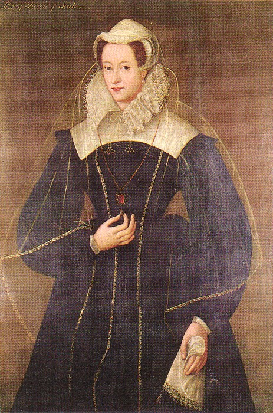

Click above for more information
Written By: Antonia Fraser
Updated on February 6, 2020
Mary stuart was the only child of King James V of Scotland and his French wife, Mary of Guise. The death of her father six days after her birth left Mary as queen of Scotland in her own right. Although Mary's great-uncle King Henry VIII of England made an unsuccessful effort to secure control of her (Mary inherited Tudor blood through her grandmother, a sister of King Henry VIII), the regency of the kingdom was settled in favour of her mother.
Her mother saw to it that Mary was sent to France at age five. There she was brought up at the court of King Henry II and his Queen Catherine de Medicis with their own large family, assisted by relations on her mother's side, the powerful Guises. Despite a charmed childhood of much luxury, incuding frequent hunting and dancing, Mary's education was not neglected, and she was taught Latin, Italian, Spanish, and some Greek.By her remarkable beauty, with her tall, slender figure, her red-gold hair and amber-coloured eyes, and her taste for music and poetry, Mary summed up the contemporary ideal of the Renaissance princess at the time of her marriage to Francis, Dauphin of France, in April 1558. Although it was a polotical match aimed at the union of France and Scotland, Mary was sincerely fond of her boy husband, though the marriage was probably never consummated.
The accession of Elizabeth Tudor to the throne of England in November 1558 meant that Mary was, by virtue of her Tudor blood, next in line to the English throne. Roman Catholics who considered Elizabeth illegitimate because they regarded Henry VIII's divorce from Catherine of Aragon and his marriage to Anne Boleyn invalid even looked upon Mary as the lawfu queen. Mary's father-in-law, Henry II of France, thus claimed the English Throne on her behalf. The death of Henry II in 1559 brought Francis to the French throne and made Mary a glittering queen consort of France, until Francis's prematrue death in December 1560 made her a widow at the age of 18.
Returning to Scotland in August 1561, Mary discovered that her sheltered French upbringing had made her ill-equipped to cope with the series of problems now facing her. Mary's former pretensions to the English throne had incurred Elizabeth's hostility. She refused to acknowledge Mary as her heiress, however much Mary, nothing if not royal by temperament, prized her English rights. While Mary herself was a Roman Catholic, the official religion of Scotland had been reformed to Protestantism in her absence, and she thus represented to many, including the leading Calvinist preacher John Knox, a foreign queen of an alien religion. Most difficult of all were the Scottish nobles; factious and turbulent after a series of royal minorities, they cared more for private feuds and self-aggrandizement than support of the crown. Nevertheless, for the first years of her rule, Mary managed well, with the aid of her half-brother James, Earl of Moray, and helped in particular by her policy of religious tolerance. Nor were all the Scots averse to the spectacle of a pretty young queen creating a graceful court life and enjoying her progresses round the country.
It was Mary's second marriage in July 1565 to her cousin Henry Stewart, Earl of Darnley, that started the fatal train of events culminating in her destruction. Mary married the handsome Darnley recklessly for love. It was a disastrous choice because by her marriage she antagonized all the elements interested in the power structure of Scotland, including Elizabeth, who disapproved of Mary marrying another Tudor descendant, and her half brother James, who, jealous of teh Lennox family's rise to power, promptly rebelled. Nor did Darnley's character measure up to the promise of his appearance - he was weak, vicious, and yet ambitious. The callous butchery of her secretary and condifant, David Riccio, in front of her own eyes, in March 2566, by Darnley and a group of nobles, convinced Mary that her husband had aimed at her own life. The birth of their son James in June did nothing to reconcile the couple, and Mary, armed now with the heir she had craved, looked for some means to relieve an intolerable situation.
The next eight months constitute the most tangled and controversial period of Mary's career. According to Mary's detractors, it was during this period that she developed an adulterous liaison with James Hepburn, 4th earl of Bothwell, and planned with him the death of Darnley and their own following marriage. There is, however, no contemporary evidence of this love affair, before Darnley's death, except the highly dubious so-called Casket Letters, poems and letters supposedly written by Mary to Bothwell but now generally considered to be inadmissable evidence by historians. But Mary did undoubtedly consider the question of a divorce from Darnley, after a serious illness in October 1566, which left her health wrecked and her spirits low. On the night of February 9, 1567, the house at Kirk o' Field on the outskirts of Edinburgh where Darnley lay recovering from illness was blown up, and Darnley himself was strangled while trying to escape. Many theories have been put forward to explain conflicting accounts of the crime, including the possibility that Darnley, plotting to blow up Mary, was caught in his own trap. Nevertheless, the most obvious explanation - that those responsible were the nobles who hated Darnley - is the most likely one.
Whatever Mary's foreknowledge of the crime, her conduct thereafter was fatally unwise and showed how much she lacked wise counselors in Scotland. After three months, she allowed herself to be married off to Bothwell, the chief suspect, after he abducted and ravished her. If passion is rejected as the motive, Mary's behaviour can be ascribed to her increasing despair, exacerbated by ill health, at her inability to manage the affairs of tempestuous Scotland without a strong arm to support her. But in fact Bothwell as a consort proved no more acceptable to the jealous Scottish nobility than Darnley had been. Mary and Bothwell were parted forever at Carberry Hill on June 15, 167, Bothwell to exile and imprisonment where he died in 1578 and Mary to incarceration on the tiny island of Loch Leven, where she was formally deposed in favour of her one-year-old son James. After a brief fling of liberty the following year, defeat of her supporters at a battle of Langside put her once more to flight. Impulsively, Mary sought refuge in England with her cousin Elizabeth. But Elizabeth, with all the political cunning Mary lacked, employed a series of excuses connected with the murder of Darnley to hold Mary in Enlgish captivity in a series of prisos for the next 18 years of her life. In the meantime, Mary's brother Moray flourished as regent of Scotland.
Mary's captivity was long and wearisome, only partly allayed by the consolations of religion and, on a more mundane level, her skill at embroidery and her love of such little pets as lap dogs and singing birds. Her health suffered from the lack of physical exercise, her figure thickened, and her beauty diminished, as can be seen in the best-known pictures of her in black velvet and white veil, dating from 1578. Naturally, she concentrated her energies on procuring release from an imprisonment she considered unjustified, at first by pleas and later by conspiracy. Unfortunately for her survival, Mary as a Catholic was the natural focus for the hopes of those English Catholics who wished to replace the Protestant queen Elizabeth on the throne. It was the discovery in 1586 of a plot to assassinate Elizabeth and bring about a Roman Catholic uprising that convinced Queen Elizabeth that, while she lived, Mary would always constitute too dangerous a threat to her own position.
Despite the fact she was the sovereign queen of another country, Mary was tried by an English court and condemned; her son, James, who had not seen his mother since infancy and now had his sights fixed on succeeding to the English throne, raised no objections. Mary was executed in 1587 in the great hall at Fotheringhay Castle, near Peterborough; she was 44 years old. It was a chilling scene, redeemed by the great personal dignity with which ary met her fate. Her body ultimately came to rest in Westminster Abbey in a magnificent monument James I raised to his mother after he finally ascended the throne of England.